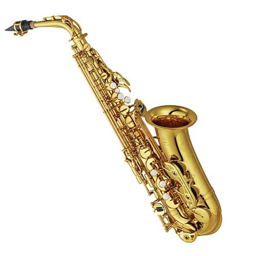

Hi!! I am a graduating senior this fall at Ohio Dominican University. I work at the Ohio Dominican Computer Helpdesk, where I interact with people regularly and help them solve different technological issues. I play the alto saxophone here for the marching band. I spend a lot of time bullet journaling, which is an intense homemade planner with areas to color, journal, or track different aspects of my life. For my bullet journal, I often use Pinterest as a reference to get more ideas and inspiration! I frequently visit it, as it has become one of my favorite websites. I also lift weights as a form of exercise, and spend a lot of time at church or with my church friends (I actually live with a bunch of them!).
One of my favorite hobbies I have is playing the alto saxophone. I have been playing for 11 years, and I absolutely love it! I have played all sorts of music such as: classical, pop, jazz, folk, marching, rock, and more. My favorite genre to pracrtice is jazz, because it has so much contained in the one genre that I never get bored. I have played bebop jazz, swing, and I have also improvized before as well. The creativity within jazz is beautiful, and I am so happy to be a part of it by playing the alto saxophone! Below is a picture of the instrument I play as a reference.
